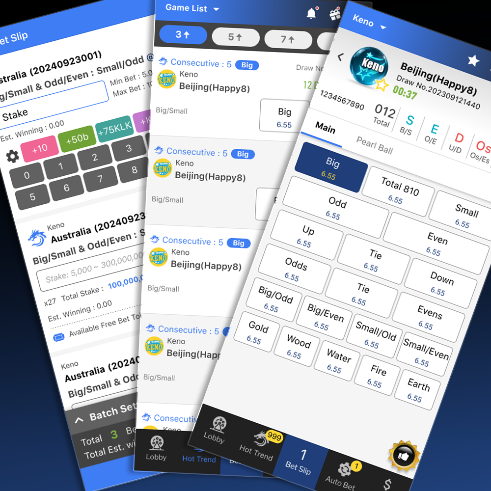
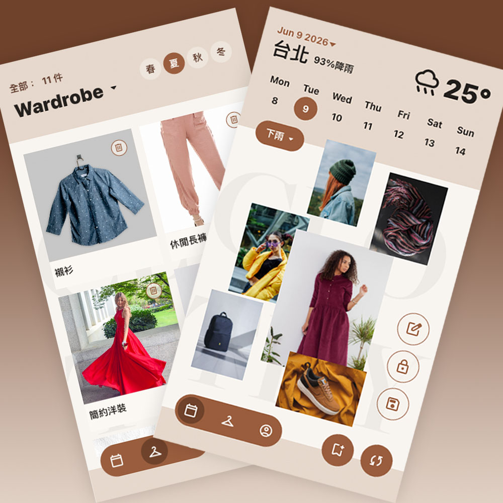
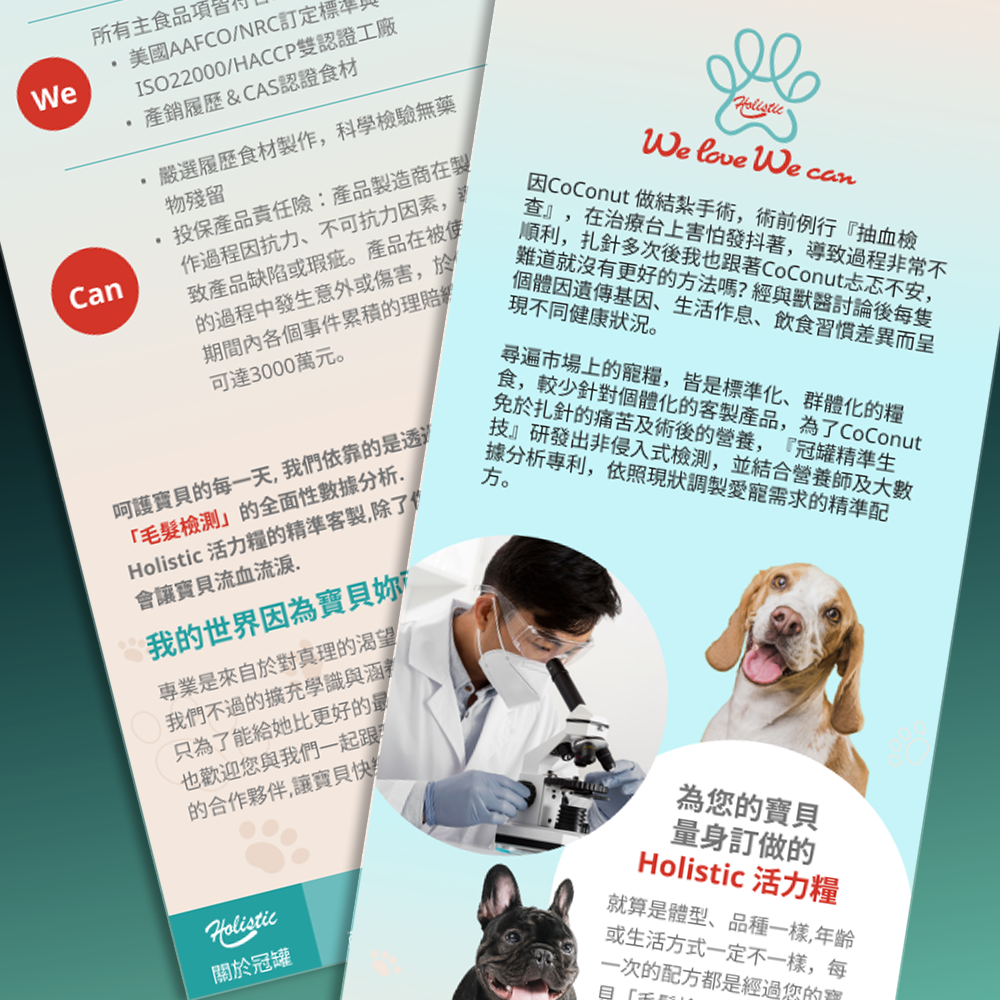
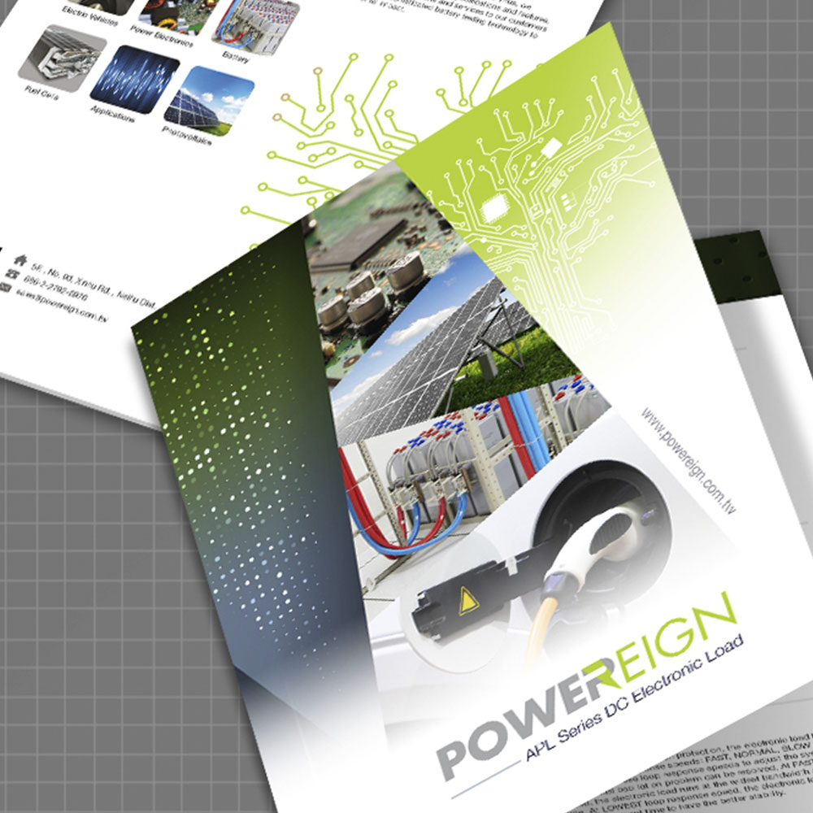

設計師
& AI 輔助創作者
具備 10 年以上數位設計與互動產品經驗，近年專注於 UI/UX、遊戲介面與跨平台體驗設計。
擅長結合視覺設計與前端實作能力，並運用 AI 工具加速概念發想、介面探索與 Prototype 製作，打造兼具使用體驗與商業目標的產品設計。
Cody Chiu
我擁有超過十年的設計經驗，擅長把創意方向轉化為可落地的數位產品。我的工作橫跨UIUX設計與前端開發，也讓我理解好的介面應該自然融入使用情境，而不是成為操作負擔。
我專注於複雜遊戲介面與互動式網頁產品，重視使用流程、視覺層級與產品節奏。我的設計方法強調清楚的資訊架構與精準的視覺判斷，讓每個像素與每段程式都服務於明確的使用目的。
近年我也將 AI 工具整合進工作流程，讓概念能更快轉化為原型。我會使用 AI 進行版面探索、前端程式生成、文案修整與視覺迭代，同時保留最終設計判斷，確保方向符合 UX 邏輯與產品目標。
Professional Timeline
UI/UX 設計師
2020 — 現在軒昂有限公司
- 規劃遊戲 UI 版面、Wireflow 與互動原型，並完成網頁切版，支援產品開發與設計落地。
- 建立跨平台設計元件，提升設計交付品質與開發效率。
- 製作活動素材、Banner、動畫與遊戲視覺，協助提升行銷成效。
資深設計師
2011 — 2020形上設計有限公司
- 向客戶提案並負責專案期間的溝通協調。
- 依照客戶需求提供行銷設計解決方案，包含產品影片、視覺設計與網站設計， 支援活動推廣與品牌曝光。
網頁設計師
2007 — 2011戲子科技股份有限公司 (嚕米玩樂城市)
- 網頁設計與切版，協助開發溝通。
- 設計並製作品牌合作活動頁，支援聯名推廣。
- 建立遊戲視覺概念與美術構圖。
熟悉的 工具
The tools and technologies I use to bring digital dreams to reality.
我的 作品集
A curation of digital and physical design
互動遊戲
以直覺 UI/UX 與使用流程為核心的遊戲介面設計

遊戲 UI
展示創新 UI/UX 解決方案的專業遊戲設計

AI 產品設計
AI 輔助的衣櫃管理與穿搭規劃應用

網頁設計
整合電商功能的商業網站設計
影片製作
產品與商業影片敘事製作
展覽設計
展覽與展場視覺設計

平面設計
行銷素材與印刷品設計